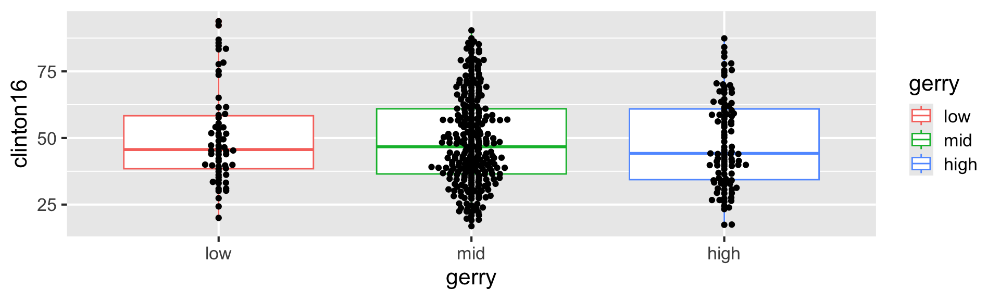
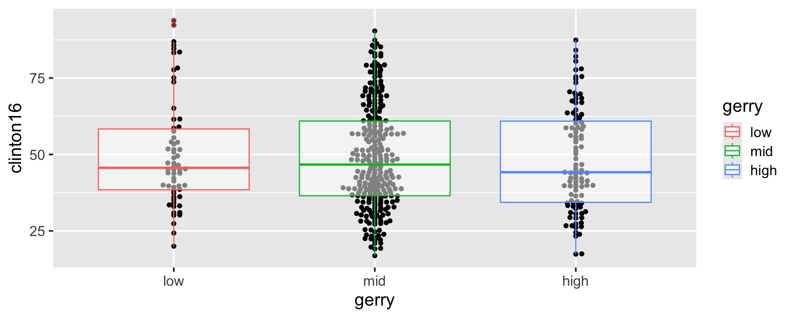

Tidying data
Lecture 7
Dr. Mine Çetinkaya-Rundel
Duke University
STA 199 - Fall 2025
September 16, 2025
Warm-up
While you wait: Participate üì±üíª
Which of the following plots does this code produce?



Scan the QR code or go to app.wooclap.com/sta199. Log in with your Duke NetID.
Announcements
If you haven’t turned in HW 1, you received an email reminding you that you homework may be submitted up to 72 hours after the deadline, with a 5% deduction for each 24-hour period it is late. More info on late policy on syllabus.
Don’t forget to review your Lab 1 feedback on Gradescope, even if you didn’t miss any points on it.
Great job with questions on Ed and office hours, keep it up!
I will hold office hours today after class!
Recap: layering geoms
Update the following code to create the visualization on the right.

Recap: layering geoms
- Original Code:
ggplot(gerrymander, aes(x = gerry, y = clinton16)) +
geom_boxplot(aes(color = gerry)) +
geom_beeswarm() 
Recap: layering geoms
- Swap the order of the two geoms.
ggplot(gerrymander, aes(x = gerry, y = clinton16)) +
geom_beeswarm() +
geom_boxplot(aes(color = gerry))
Recap: layering geoms
- Make the boxplots semi-transparent.
ggplot(gerrymander, aes(x = gerry, y = clinton16)) +
geom_beeswarm() +
geom_boxplot(aes(color = gerry), alpha = 0.5)
Recap: layering geoms
- Remove the legend.
ggplot(gerrymander, aes(x = gerry, y = clinton16)) +
geom_beeswarm() +
geom_boxplot(aes(color = gerry), alpha = 0.5, show.legend = FALSE)
Recap: logical operators
Generally useful in a filter() but will come up in various other places as well…
| operator | definition |
|---|---|
< |
is less than? |
> |
is greater than? |
Recap: Participate üì±üíª
Match the following logical operators to their definitions.
<=>===!=
Scan the QR code or go to app.wooclap.com/sta199. Log in with your Duke NetID.
Recap: Participate üì±üíª
Match the following definitions to their logical operators.
- is x AND y?
- is x OR y?
- is x NA?
- is x not NA?
Scan the QR code or go to app.wooclap.com/sta199. Log in with your Duke NetID.
Recap: logical operators (cont.)
Other useful logical operators:
| operator | definition |
|---|---|
x %in% y |
is x in y? |
!(x %in% y) |
is x not in y? |
!x |
is not x? (only makes sense if x is TRUE or FALSE) |
Recap: logical operators (cont.)
| Col1 | Col2 | Col3 |
|---|---|---|
| 1 | A | 50 |
| 2 | B | 40 |
| 3 | A | 30 |
| 4 | B | NA |
| 5 | C | 10 |
For which rows are the following true?
Col1 < 3 | Col3 < 20Col2 == "C"Col2 %in% c("C", "A")is.na(Col3)!is.na(Col3)
Data tidying
Tidy data
“Tidy datasets are easy to manipulate, model and visualise, and have a specific structure: each variable is a column, each observation is a row, and each type of observational unit is a table.”
Tidy Data, https://vita.had.co.nz/papers/tidy-data.pdf
Note: “easy to manipulate” = “straightforward to manipulate”
Goal
Visualize StatSci majors over the years!
TO DO: Update with plot from end of AE
Data
# A tibble: 4 × 16
degree_type `2011` `2012` `2013` `2014` `2015` `2016` `2017` `2018`
<chr> <dbl> <dbl> <dbl> <dbl> <dbl> <dbl> <dbl> <dbl>
1 AB2 0 1 0 0 4 4 1 0
2 AB 2 2 4 1 3 6 3 4
3 BS2 2 6 1 0 5 6 6 8
4 BS 5 9 4 13 10 17 24 21
# ℹ 7 more variables: `2019` <dbl>, `2020` <dbl>, `2021` <dbl>,
# `2022` <dbl>, `2023` <dbl>, `2024` <dbl>, `2025` <dbl>-
The first column (variable) is the
degree:- BS (Bachelor of Science)
- BS2 (Bachelor of Science, 2nd major)
- AB (Bachelor of Arts)
- AB2 (Bachelor of Arts, 2nd major)
The remaining columns show the number of students graduating with that major in a given academic year from 2011 to 2025.
Let’s plan!
Review the goal plot and sketch the data frame needed to create it. What would go inside aes when we call ggplot?
The Goal
We want to write code that starts something like this:
But our data are not in the right format :(
# A tibble: 4 × 16
degree_type `2011` `2012` `2013` `2014` `2015` `2016` `2017` `2018`
<chr> <dbl> <dbl> <dbl> <dbl> <dbl> <dbl> <dbl> <dbl>
1 AB2 0 1 0 0 4 4 1 0
2 AB 2 2 4 1 3 6 3 4
3 BS2 2 6 1 0 5 6 6 8
4 BS 5 9 4 13 10 17 24 21
# ℹ 7 more variables: `2019` <dbl>, `2020` <dbl>, `2021` <dbl>,
# `2022` <dbl>, `2023` <dbl>, `2024` <dbl>, `2025` <dbl>The Challenge
How do we go from this ….
# A tibble: 4 x 16 degree_type 2011 2012 2013 2014 2015 2016 2017 2018 2019
1 AB2 0 1 0 0 4 4 1 0 0
2 AB 2 2 4 1 3 6 3 4 4
3 BS2 2 6 1 0 5 6 6 8 8
4 BS 5 9 4 13 10 17 24 21 26…. to this??
# A tibble: 60 x 3 degree_type year n
1 AB2 2011 0
2 AB2 2012 1
3 AB2 2013 0
4 AB2 2014 0
5 AB2 2015 4
6 AB2 2016 4
7 AB2 2017 1
8 AB2 2018 0
9 AB2 2019 0
10 AB2 2020 1
11 AB2 2021 2
12 AB2 2022 0
13 AB2 2023 3
14 AB2 2024 1
15 AB2 2025 0
16 AB 2011 2
17 AB 2012 2Pivot
pivot_longer()
# A tibble: 4 x 16 degree_type 2011 2012 2013 2014 2015 2016 2017 2018 2019
1 AB2 0 1 0 0 4 4 1 0 0
2 AB 2 2 4 1 3 6 3 4 4
3 BS2 2 6 1 0 5 6 6 8 8
4 BS 5 9 4 13 10 17 24 21 26Pivot the statsci data frame longer such that each row represents a degree type / year combination.
year and number of graduates for that year are columns in the result data frame.
⟶
# A tibble: 60 x 3 degree_type year n
1 AB2 2011 0
2 AB2 2012 1
3 AB2 2013 0
4 AB2 2014 0
5 AB2 2015 4
6 AB2 2016 4
7 AB2 2017 1
8 AB2 2018 0
9 AB2 2019 0
10 AB2 2020 1
11 AB2 2021 2
12 AB2 2022 0
13 AB2 2023 3
14 AB2 2024 1
15 AB2 2025 0
16 AB 2011 2
17 AB 2012 2pivot_longer()
# A tibble: 4 x 16 degree_type 2011 2012 2013 2014 2015 2016 2017 2018 2019
1 AB2 0 1 0 0 4 4 1 0 0
2 AB 2 2 4 1 3 6 3 4 4
3 BS2 2 6 1 0 5 6 6 8 8
4 BS 5 9 4 13 10 17 24 21 26⟶
# A tibble: 60 x 3 degree_type year n
1 AB2 2011 0
2 AB2 2012 1
3 AB2 2013 0
4 AB2 2014 0
5 AB2 2015 4
6 AB2 2016 4
7 AB2 2017 1
8 AB2 2018 0
9 AB2 2019 0
10 AB2 2020 1
11 AB2 2021 2
12 AB2 2022 0
13 AB2 2023 3
14 AB2 2024 1
15 AB2 2025 0
16 AB 2011 2
17 AB 2012 2year
What is the type of the year variable? Why? What should it be?
It’s a character (
chr) variable since the information came from the columns of the original data frame.R cannot know that these character strings represent years.
The variable type should be numeric.
pivot_longer() again
This time, also make sure year is a numerical variable in the resulting data frame.
pivot_longer() again
This time, also make sure year is a numerical variable in the resulting data frame.
# A tibble: 60 × 3
degree_type year n
<chr> <dbl> <dbl>
1 AB2 2011 0
2 AB2 2012 1
3 AB2 2013 0
4 AB2 2014 0
5 AB2 2015 4
6 AB2 2016 4
7 AB2 2017 1
8 AB2 2018 0
9 AB2 2019 0
10 AB2 2020 1
# ℹ 50 more rowsApplication exercise
Goal: recreate this plot
ae-05-majors-tidy
Go to your ae project in RStudio.
If you haven’t yet done so, make sure all of your changes up to this point are committed and pushed, i.e., there’s nothing left in your Git pane.
If you haven’t yet done so, click Pull to get today’s application exercise file: ae-05-majors-tidy.qmd.
Work through the application exercise in class, and render, commit, and push your edits by the end of class.
Pivot Wider
We pivotted longer… what about wider?
# A tibble: 4 x 16 degree_type 2011 2012 2013 2014 2015 2016 2017 2018 2019
1 AB2 0 1 0 0 4 4 1 0 0
2 AB 2 2 4 1 3 6 3 4 4
3 BS2 2 6 1 0 5 6 6 8 8
4 BS 5 9 4 13 10 17 24 21 26Can we go the other direction?
⟵
# A tibble: 60 x 3 degree_type year n
1 AB2 2011 0
2 AB2 2012 1
3 AB2 2013 0
4 AB2 2014 0
5 AB2 2015 4
6 AB2 2016 4
7 AB2 2017 1
8 AB2 2018 0
9 AB2 2019 0
10 AB2 2020 1
11 AB2 2021 2
12 AB2 2022 0
13 AB2 2023 3
14 AB2 2024 1
15 AB2 2025 0
16 AB 2011 2
17 AB 2012 2We pivotted longer… what about wider?
# A tibble: 4 x 16 degree_type 2011 2012 2013 2014 2015 2016 2017 2018 2019
1 AB2 0 1 0 0 4 4 1 0 0
2 AB 2 2 4 1 3 6 3 4 4
3 BS2 2 6 1 0 5 6 6 8 8
4 BS 5 9 4 13 10 17 24 21 26⟵
# A tibble: 60 x 3 degree_type year n
1 AB2 2011 0
2 AB2 2012 1
3 AB2 2013 0
4 AB2 2014 0
5 AB2 2015 4
6 AB2 2016 4
7 AB2 2017 1
8 AB2 2018 0
9 AB2 2019 0
10 AB2 2020 1
11 AB2 2021 2
12 AB2 2022 0
13 AB2 2023 3
14 AB2 2024 1
15 AB2 2025 0
16 AB 2011 2
17 AB 2012 2Recap: Pivot
- When should you pivot? If all of the data you need is in your data frame, but the columns you need don’t exist, there is a good chance it’s time to pivot!
- Wide and long: Data sets can’t be labeled as wide or long but they can be made wider or longer for a certain analysis that requires a certain format
-
Pivot longer - data type: When pivoting longer, variable names that turn into values are characters by default. If you need them to be in another format, you need to explicitly make that transformation, which you can do so within the
pivot_longer()function.
Recap: Plotting
You can tweak a plot forever, but at some point the tweaks are likely not very productive.
However, you should always be critical of defaultsand see if you can improve the plot to better portray your data / results / what you want to communicate.